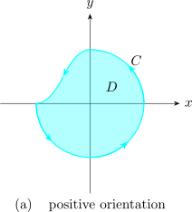
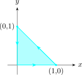

4.8 Transformation Of Line Integrals Into Double Integrals
Green’s theorem in the plane gives the relationship between a line integral around a simple closed curve \(C\) and a double integral over the plane region \(D\) bounded by \(C\). We take \(D\) to include the points of \(C\). The positive orientation of a simple closed curve is a single counter-clockwise traversal of \(C\): if \(C\) is given by \(\mathbf r(t)\), \(a\leq t \leq b\), then the region \(D\) is always on the left as the point \(\mathbf r(t)\) traverses \(C\).
|  |
Theorem 4.8.1 (Green’s theorem). Let \(C\) be a positively oriented, piecewise smooth, simple closed curve in the plane and let \(D\) be the region bounded by \(C\). If \(P\) and \(Q\) have continuous partial derivatives on an open region that contains \(D\), then \[\oint _C P\,dx + Q\,dy = \iint \limits _D\left (\frac {\partial Q}{\partial x} - \frac {\partial P}{\partial y}\right ) dA .\]
The notation \(\oint _C\) indicates that the line integral is taken with the positive orientation of the closed curve \(C\). Another notation for the positively oriented boundary curve of \(D\) is \(\partial D\), so that \[\iint \limits _D \left ( \frac {\partial Q}{\partial x} - \frac {\partial P}{\partial y}\right ) dA = \oint _{\partial D} P \,dx + Q \, dy .\]
Proof for a region of both types. Suppose \(D = \{(x,y) \mid a\leq x\leq b,\ g_1(x)\leq y\leq g_2(x)\}\) is a type I region. It is enough to show \(-\iint _D P_y\,dA = \oint _C P\,dx\); the companion identity \(\iint _D Q_x\,dA = \oint _C Q\,dy\) follows in the same way from a description of \(D\) as a type II region. By Theorem 3.3.1 and the fundamental theorem of calculus, \[\iint \limits _D \frac {\partial P}{\partial y}\,dA = \int _a^b\int _{g_1(x)}^ {g_2(x)}\frac {\partial P}{\partial y}\,dy\,dx = \int _a^b\big [P(x,g_2(x)) - P(x,g_1(x))\big ]\,dx .\] On the other hand, \(C\) consists of the lower curve \(C_1\): \(y = g_1(x)\) from left to right, the upper curve \(C_3\): \(y = g_2(x)\) from right to left, and possibly vertical segments \(C_2\) and \(C_4\), on which \(dx = 0\). So \[\oint _C P\,dx = \int _a^b P(x, g_1(x))\,dx - \int _a^b P(x, g_2(x))\,dx ,\] which is \(-\iint _D P_y\,dA\). Adding the two identities gives the theorem. A general region is cut into pieces of both types; the line integrals along the cuts are traversed once in each direction and cancel. □
Example 4.8.2. Evaluate \(\oint _C x^4\,dx + xy\,dy\), where \(C\) is the triangular curve consisting of the line segments from \((0,0)\) to \((1,0)\), from \((1,0)\) to \((0,1)\) and from \((0,1)\) to \((0,0)\).

Solution. With \(P = x^4\) and \(Q = xy\), \(\frac {\partial Q}{\partial x} - \frac {\partial P}{\partial y} = y - 0 = y\), and \(C\) is positively oriented around \(D = \{(x,y) \mid 0\leq x\leq 1,\ 0\leq y \leq 1 -x\}\). By Green’s theorem, \[\oint _C x^4\,dx + xy\,dy = \iint \limits _D y\,dA = \int ^1_0 \int ^{1-x}_0 y\,dy\,dx = \int _0^1\frac {(1-x)^2}{2}\,dx = \frac {1}{6} .\] Computing the three line integrals separately gives the same result with more work.
Example 4.8.3. Evaluate \(\oint _C\left (3y - e^{\sin x}\right )dx + \left (7x + \sqrt {y^4 + 1}\right )dy\), where \(C\) is the circle \(x^2 + y^2 = 9\).
Solution. The region \(D\) bounded by \(C\) is the disc \(x^2 + y^2 \leq 9\), and \(Q_x - P_y = 7 - 3 = 4\). By Green’s theorem, \[\oint _C \left ( 3y - e^{\sin x}\right ) dx + \left ( 7x + \sqrt {y^4 + 1}\right ) dy = \iint \limits _D 4\,dA = 4\cdot 9\pi = 36\pi .\] The awkward terms \(e^{\sin x}\) and \(\sqrt {y^4 + 1}\) contribute nothing, since each depends only on the variable it is integrated against.
Green’s theorem can also be used in reverse, to compute areas. Since the area of \(D\) is \(\iint _D 1\,dA\), choose \(P\) and \(Q\) with \(\frac {\partial Q}{\partial x} - \frac {\partial P}{\partial y} = 1\): for example \(P = 0\), \(Q = x\), or \(P = -y\), \(Q = 0\), or \(P = -\frac {1}{2}y\), \(Q = \frac {1}{2}x\).
Theorem 4.8.4. If \(C\) is a positively oriented simple closed curve bounding a region \(D\) to which Green’s theorem applies, then the area of \(D\) is \[A(D) = \oint _C x\,dy = - \oint _C y\,dx = \frac {1}{2}\oint _C x\,dy - y\,dx .\]
Solution. Parametrise the ellipse by \(x = a \cos t\), \(y = b\sin t\), \(0\leq t \leq 2\pi \), which traverses it counter-clockwise. By Theorem 4.8.4, \[A = \frac {1}{2}\oint _C x\,dy - y\,dx = \frac {1}{2}\int ^{2\pi }_0 \left [(a\cos t) (b\cos t) - (b\sin t ) (-a\sin t)\right ] dt = \frac {ab}{2}\int ^{2\pi }_0 dt = \pi ab .\]
Example 4.8.6. Evaluate \(\oint _C y^3\,dx - x^3\,dy\), where \(C\) is the positively oriented boundary of the annulus \(1\leq x^2 + y^2\leq 4\).
Solution. Green’s theorem extends to regions with holes when the boundary is oriented so that the region is always on the left: counter-clockwise on the outer circle and clockwise on the inner one. The cuts used to reduce the region to simply connected pieces cancel. Here \(Q_x - P_y = -3x^2 - 3y^2 = -3r^2\), so \[\oint _C y^3\,dx - x^3\,dy = \int _0^{2\pi }\int _1^2 (-3r^2)\,r\,dr\,d\theta = -3\cdot 2\pi \cdot \frac {16 - 1}{4} = -\frac {45\pi }{2} .\]
Example 4.8.7. Let \(\mathbf F = \frac {-y\,\mathbf i + x\,\mathbf j}{x^2 + y^2}\). Show that \(P_y = Q_x\) wherever \(\mathbf F\) is defined, but that \(\oint _C\mathbf F\cdot d\mathbf r = 2\pi \) around the unit circle. Why does this not contradict Green’s theorem?
Solution. Differentiating, \(P_y = \frac {-(x^2+y^2) + 2y^2}{(x^2+y^2)^2} = \frac {y^2 - x^2}{(x^2+y^2)^2}\), and \(Q_x = \frac {(x^2 + y^2) - 2x^2}{(x^2 + y^2)^2}\) is the same. On the unit circle \(\mathbf r(t) = \langle \cos t,\sin t\rangle \), \(\mathbf F\cdot \mathbf r' = \sin ^2t + \cos ^2t = 1\), so the circulation is \(2\pi \). Green’s theorem requires \(P\) and \(Q\) to have continuous derivatives on the whole disc, and \(\mathbf F\) is not defined at the origin. The punctured plane is not simply connected, and on it \(\mathbf F\) is not conservative, although \(P_y = Q_x\): the hypothesis on the domain in Theorem 4.2.2 cannot be dropped.
Questions on this section
Stuck on something here? Ask below and it stays attached to this topic.